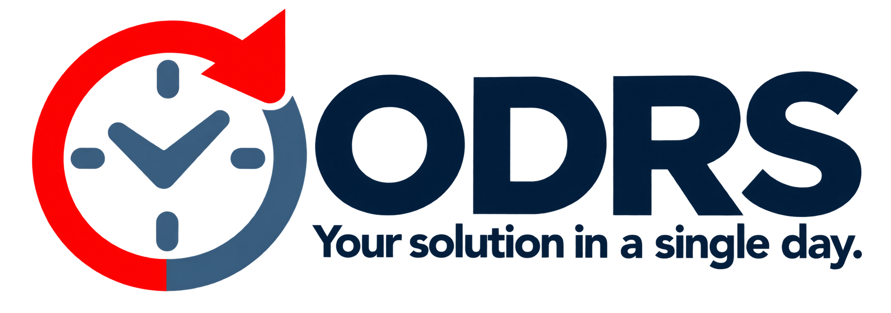
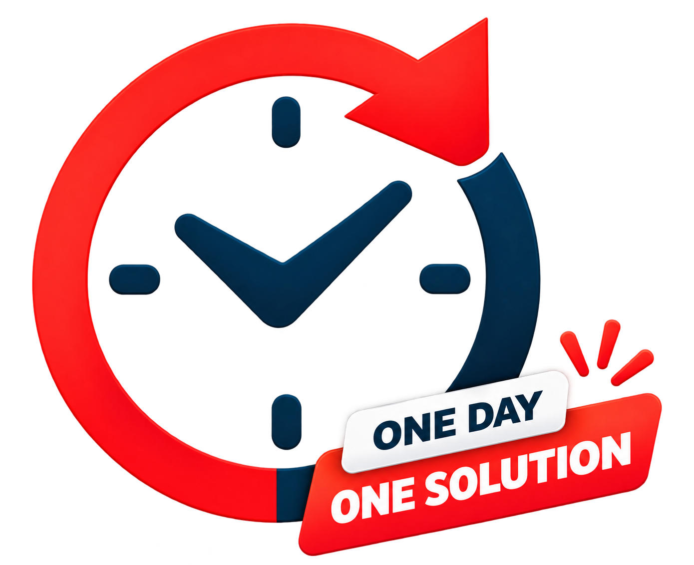

Fast delivery
Get focused support for your academic and technical tasks without unnecessary complexity.

ODRS is built around practical student needs: clear communication, affordable support and focused delivery.
Get focused support for your academic and technical tasks without unnecessary complexity.
Our services are designed around student requirements, budgets and project timelines.
We keep the work clear, practical and aligned with the requirement you provide.
Academic documentation, projects, coding, GitHub and professional-profile support in one platform.

From choosing the right service to sharing your requirements and receiving the completed work, we aim to keep every step straightforward.
Share exactly what you need and receive focused guidance.
Services are structured with student budgets in mind.
We focus on useful deliverables that match your requirement.
Choose a service and send your requirement today.